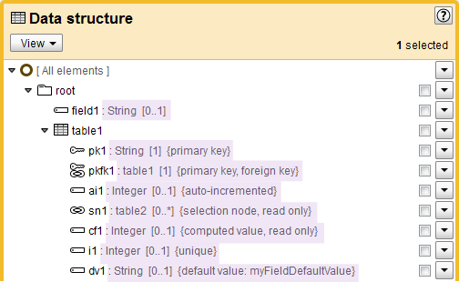

Release Date: June 25, 2012
While it was previously impossible to enforce the validity of data space merge results, you can now configure the merge policy 'Pre-validating merge' for a data space to ensure that merges of its child data spaces never produce results containing validation errors. When this new policy is used, a merge is only finalized if the result is valid. If errors would result, you have the opportunity to correct the errors and reattempt the merge, or abandon it.
See Merging a data space and data space information for more information.
Aggregated lists are now supported for historization, whereas they were ignored in the previous version of EBX5.
The following limitations remain:
a historized schema cannot contain embedded lists;
a historized schema cannot contain lists under terminal complex types.
EBX5 user interface internationalization can now be extended to other locales. By default, the interface is available in English and French, but additional localizations for Latin and Cyrillic character-based may be provided by the user.
See Extending EBX5 internationalization for more information.
The advanced filter can now be set as the default filter to be applied when accessing a table, as was already possible with the search and key filters in previous releases.
The tableRef search tool performance has been improved for large tables.
It is now possible to set the number of items displayed on each page of UIList searchable list selection components, used to make selections such as foreign keys and enumerations. Previously, these selection dialogs always showed 10 items per page.
See Searchable list selection page size for more information.
In order to prevent Internet Explorer 8 browsers from using compatibility mode to display the repository user interface, EBX5 adds a meta-tag to the header of pages by default. This setting may conflict with existing local environment policies, thus the parameter 'IE compatibility mode' has been added to Administration > User interface > Root > Graphical interface configuration > Ergonomics and layout to allow the disactivation of this function. The parameter is set to 'Yes' by default.
See IE compatibility mode for more information.
It is now possible to specify the scope to be included in the user interface when using a web component by specifying the parameter scope. This can be used expose a higher level of navigation to the user. For example, this can determine whether they are limited to a single data space or data set, or if they see the full interface.
See UIHttpManagerComponent.scope in the Java API for more information.
It is now also possible to choose how the 'logout' button is displayed in the EBX5 header using the new parameter closebutton. An 'X' icon can be substituted for the standard logout icon.
See UIHttpManagerComponent.CloseButtonSpec in the Java API for more information.
Major updates have been made to the product glossary, found in the EBX5 documentation under User Guide > Introduction.
The publication process of embedded data models includes the following enhancements:
It is now possible to use packaged resources with an embedded data model. You can use resources that are contained in a module in data models that are completely managed inside the EBX5 repository.
Embedded data models can now be used from D3 data spaces to create data sets. Currently, the D3 broadcast does not yet include the data model itself. Thus, synchronizations of the data models themselves must be performed manually.
See Publication for more information.
The user interface of 'Data structure' in the Data Model Assistant has been enhanced to display additional information about each field.
The following details are now displayed:
The multiplicity of the field,
If the field is a part of a primary key,
If the field is a foreign key,
If the field is auto-incremented,
If the field is a selection node,
If the field value is computed,
If the field has a uniqueness constraint, and
The default field value, if one exists.

The process of defining business objects and rules is now less strict. It is possible to directly specify a Java class by using only its fully qualified name, without having to define a location for the Java source in the data model configuration.
The workflow modeling user interface has been improved with the following:
Fields have been re-organized to help facilitate input.
Additional controls have been added to verify mandatory fields and to avoid errors during workflow execution. In particular, if no service extension has been defined for a user task, it is now impossible to continue without defining participants.
During user task definition, it is now possible to customize the labels and the confirmation messages of the work item action buttons, by default labelled 'Accept' and 'Reject'. These buttons are displayed during execution of the user task to accept or reject a work item.
See the User Task documentation for more information.
It is now possible to change the security declaration of WSDLs to use a mechanism other than the default UsernameToken Profile 1.0 standard.
See Overriding the default security header for more information.
It was previously impossible to distinguish a null value from a hidden value. It is now possible to retrieve the access rights defined on records during the the select operation, or using a dedicated operation named getCredentials.
See Get credentials request for more information.
The getChanges operations to fetch differences between data sets or tables can now be executed in unresolved mode, where computed and inherited values are ignored.
See Get changes requests for more information.
When returning a SOAP Fault element for error messages, data services now also set the HTTP return code to '500'.
See Exceptions handling for more information.
It is now possible to declare a single EBX5 instance as being a master for certain data and a slave for other data. In previous versions, the same instance had to be either a master or a slave for all data.
See D3 Administration for more information.
A new API enables the transformation of data during archive export or D3 broadcast. This can be used to anonymize or encrypt data.
See NodeDataTransformer for more information.
A new mode, called 'Replace (synchronization) mode', is now available when importing CSV and XML files into tables.
See CSV services and XML services for more information.
An associated API has also been added for 'Replace (synchronization) mode'.
See ImportSpecMode for more information.
For the display of hierarchies, a new method has been added to help create inner pop-ups for previewing objects.
See UILabelRendererForHierarchyContext for more information.
The Ajax API has been enhanced for the retrieval of information about the calling context of an Ajax component. Specifically, it is now possible to retrieve the current data set and the current record from which an Ajax component is called.
For more information, see UIAjaxContext documentation.
The methods startTableFormRow and endTableFormRow have been added to enable the optimization of label column width when using startFormRow in forms. Use these methods before and after a section of startFormRow calls to apply the formatting to them.
See startTableFormRow and endTableFormRow for more information.
No backward compatibility issues in this version.
In order to upgrade your version of EBX5, perform the following steps:
Backup your repository, including the RDBMS and the directory ebx.repository.directory.
Replace the *.war and ebx.jar files on your application server.
[4656] The method RequestResult.nextAdaptation() does not allow the deletion of all the records in a table.
When looping over RequestResult.nextAdaptation() and deleting records, some records will not be deleted. This occurs in tables having more than a few thousand records.
[4719] Incorrect rounding in a computation rule result.
In computation rules, the result of an arithmetic operation on float has incorrect rounding.
[4785] A simple-type element under a complex type is ignored if its value is null.
One data set's element is not compared to its match in the other data set if the element has a null value and is under a complex type.
[4811] An error occurs during the serialization and deserialization of nested conditions in computation rules.
This bug occurs with the new serialization of XPath predicates. When a predicate defines a nested condition, a NullPointerException is raised.
[4824] Permission resolution is too costly.
Permission resolution is too costly, especially on a repository containing numerous branches or versions.
[4847] An error is reported when there are several data sets of the same data model in the same data space.
In a table, if an auto-increment is defined on a node which is not part of the primary key, and there are several data sets of the same data model in the same data space, an error is reported in the data model compilation report.
[4890] In a ConstraintEnumeration, a context access using a relative path is wrong during tabular view display.
When defining a ConstraintEnumeration class on a field, in the form view, it is possible to get a value of a node at the same level as valueContext.getValue(Path.PARENT.add(pathtoothernode)). In the table view, the same code always returns null.
[5002] A fatal error occurs when a '[' character is used in a primary key field.
An exception is thrown when the user tries to create a record with a String primary key containing a '[' character.
[5011] An exception occurs when opening a selection node.
If a programmatic filter is defined on a foreign key field used in a selection node, an exception occurs while opening the selection node.
[5013] Optimize the purge of orphan blocks.
When purging orphan blocks after having purged homes, an error occurs if there are too many orphan blocks.
[5043] An error occurs when refreshing a data model that defines a foreign key with a specific data space and an XPath filter.
When a data model specifies a foreign key constraint that has an XPath filter and targets a data space (branch property set), a compilation error occurs when the data model is refreshed.
[4819] Cannot modify or review a created validation rule.
After creating a validation rule, the user cannot modify or review that validation rule.
[4825] Primary key assignment is incomplete in a table that was created using a reusable type based on a group.
The following occurs when a table was created using a reusable type that was based on a group.
When you select the menu item 'Define as primary key on a field', there is no indication in the DMA that the assignment has occurred. Validation works as expected, but menu options do not change according to the primary key status of the field. For example, you can select the same field multiple times to be defined as a primary key, and as a result, the field is listed numerous times in the Advanced properties of the table as primary key.
[4867] Cannot import an Ajax component already in the DMA.
It is not possible to import a data model containing an Ajax component that is already defined in the DMA.
[4868] In the DMA, the historization profile defined on a table is deleted when a primary key is modified.
The historization profile of a table is deleted if the user modifies the primary key of the table from the data model structure hierarchy.
[4874] The UI service ServiceContext.getURLForAjaxComponent generates incorrect URLs.
The result is incorrect when using the UI service ServiceContext.getURLForAjaxComponent to generate the URL to call an Ajax component.
[4957] An error occurs at schema publication.
When defining an inter-data space foreign key with a specific XPath filter, an error occurs at schema publication:
"Node does not exist at step '_.' (current node is [/root/table2[*]/])."
[4973] User is allowed to create a duplicated table with a name containing a white space.
From an existing table, the user is allowed to complete the creation of a duplicated table with a name containing a white space even though this is invalid.
[5025] Unable to import changes made to a schema in a module.
When a change is made to a schema in a module, importing the schema does nothing until a refresh of all schemas is performed or the server is restarted.
[4839] Some nodes have an erroneous cardinality in WSDL.
When a table is not defined directly under the root of the schema, the nodes between the root and the table should be optional (cardinality min = 0).
[5084] WSDL generation for data set comparisons does not work.
In embedded schemas, WSDL generation does not work for the data set comparison operation.
[5141] The last sub-element of a complex list cannot be set to null.
Data services and XML import do not support setting the last sub-element of a complex list to null. It considers the complex element itself to be null in the list.
If the XML sub-elements are re-ordered in the XML stream, so that the last sub-element is not null, the data services or XML import succeeds.
[4787] After global validation, the same error appears several times in the validation report.
When a table constraint is defined on a table with a dependency defined on a contained field, errors on this field appear twice after re-launching a global validation.
[4828] Lack of validation in the DMA for the minimum number of elements property defined on a field.
In the DMA, it is possible to set a minimum number of elements greater than '1' without specifying a maximum number of elements.
[4857] In the hierarchy, a fatal error occurs when creating a record under the root node.
When the user clicks to create a record under the 'All' node of the hierarchy, the system displays a fatal error.
[4918] An exception is raised during the blocking validation of an aggregated foreign key.
On an aggregated list that defines a foreign key constraint in blocking validation mode, a ClassCastException is raised during validation.
[4410] Horizontal form layout takes up too much space.
When the user has read-only permissions, a scrollbar appears in forms that show nested complex fields.
[4431] In record forms where default values are set on fields in a complex node, those fields cannot be set to null.
If a JavaBean is defined on a complex node where default values have been defined on fields, the setting of those fields to null is ignored.
[4617] When displaying a hierarchy in pruned mode, a ClassCastException might occur.
If the hierarchy dependency link is a list and an enumeration, the hierarchy display generates a ClassCastException in pruned mode.
[4669] Multi-table view does not support recursive links in relational mode.
If a table includes a table ref to a table with same name in another branch, an error occurs in relational mode.
[4814] In predicate editors, if the field is a string, only the criterion is displayed.
In predicate editors, if the field is a string, only the criterion is displayed instead of a complete predicate expression.
[4843] Errors due to permissions access rights on hierarchy dimension levels are not properly managed.
If a user has no access on a hierarchy dimension level, an exception occurs. The dimension level label should be properly displayed, and the exception properly managed and displayed when the user tries to access the hierarchy.
[4987] The search tool fails on some enumeration fields.
Searching on an enumeration field that is neither a nomenclature nor a table reference displays an error.
[5008] Bad label display on orphan hierarchy member.
If the hierarchy dependency link is a join table and the hierarchy member label is based on the path of one of the join table's fields, an incorrect "Unknown path ./xxx" error is displayed.
[4460] Creating a workflow causes user to lose current page in the hierarchy.
When creating a workflow on any page other than the first, the user is sent back to the first page.
[4678] Workflow model steps in a cycle configuration may not be displayed.
In the workflow model, if there is a redirection to a parent step and the parent step is detached from its branch, all the steps from the cycle branch disappear.
[4778] Selection of the current workflow publication is lost after an action on a work item.
When an action is performed on a work item, the publication selection in the work list is lost. For example, after taking and starting a work item, then accepting it, it is necessary to re-select the publication in the work list to continue.
After an action on a work item is complete, it would be preferable to select the last publication selected. This way, the user can use the buttons to take and start a work item directly without having to manually select the work item in the work list.
[4794] A 'Mark as decided' action performed at the data set level is not applied to access rights.
When the user has clicked 'Mark as decided' at the data set level, access rights within the data set are not marked accordingly.
[4795] Problem after creating a variable with a white space in a workflow data context.
In workflows, after creating a variable with white space in a data context, the forms for creating script tasks and user tasks are incomplete.
[4803] When executing workflow models, cancelled data space merge user tasks display an incorrect message.
When a user takes and starts a data space merge user task, then cancels the operation, a message confirming a data space merge is displayed instead of a message indicating user cancellation.
[4822] The completion of an interaction does not update the previously stored parameter values for the same interaction.
It is possible to complete the same interaction multiple times, however, if the same parameter is updated more than once for the interaction, only the first value stored takes effect. Changes must be incremental.
[4836] Some actions are hidden when accessing the workflow models tab.
After an archive import, create, delete and duplicate are not available in the action menu of the workflow models tab.
[4885] Sometimes the setting of ignore reject strategies is not intialized properly.
In certain cases, the setting of the reject tolerance of user strategies in UserTask.CompletionStrategy is not initialized properly. As a result, the set can contain null values.
[4914] The workflow model is broken when a redirection to its first step is deleted.
When you add a redirection to the first step of the workflow model and then delete it, the workflow model is broken and cannot be published.
No steps are found for the publication, even though there are steps in the workflow model. The property 'firstIdInProcess' is null.
[4928] A fatal error occurs during data workflow execution.
When a workflow contains a duplicated record step whose XPath has no id, a fatal error is displayed when the workflow is executed.
[4934] An error occurs when publishing a workflow with no steps.
When trying to publish a workflow model with no steps, user cannot enter a publication name and the system displays the message 'Failed to execute service'.
[4952] Steps tree is duplicated in workflow model when data set inheritance is active.
When data set inheritance is active, the steps tree is duplicated in a workflow model when a child definition is created.
[4966] When the user reinitializes the data set validation report, they are redirected to the data set content.
When the user reinitializes the data set validation report, they are redirected to the data set content instead of staying on validation user interface.
[4974] Graphical workflow is wrong after a work item reallocation.
When there are many work items for a single user task, the graphical workflow is wrong when one work item is reallocated. Both the work item before allocation and the newly reallocated work item are displayed. In the work list, the display is correct.
[5035] A predicate with a double quote cannot be inputted in a workflow model step.
The predicate value is truncated at submission.
[4942] Cannot rollback a broadcast.
In D3 mode, if one of the slave servers is down, another slave server can still receive a broadcast, which cannot be rolled back.
[4805] An exception occurs while indexing the documentation.
EBX5 documentation indexing requires a logging API such as common.logging (commons-logging-api-1.1.1.jar). This requirement has to be removed.
[4580] Importing CSV files using 'update only' mode might generate errors that are too technical.
If the user selects the 'update only' mode for a CSV import and the file to be imported contains records that do not exist in the target table, the returned error is too technical, including an IllegalStateException.
[4988] User cannot import a CSV file with an aggregated list containing an element with carriage return.
In a record, the user enters a carriage return in an element of an aggregated list and exports the data to a CSV file. If they re-import the same CSV file, an error occurs with the message "The list has a null element, this is not supported".
[5053] An exception occurs while importing an XML file in a table with a multi-occurrence computed field.
A NullPointerException occurs while importing an XML file in a table with a multi-occurrence computed field if the mode of the import is 'Set missing values as null'.
[4861] In the DMA, avoid showing duplicate validation error messages for the same issue.
When there are multiple cases of the same validation issue in the DMA, only one error message for that type of issue should be displayed.
[4955] Tracking information is not shared between sessions and sub-sessions.
If tracking information is set in the session, it is does not get shared and becomes null when the user accesses a sub-session.
[4109] Web component: 'Close' button is not available.
Although the parameter 'redirect' is specified in the URL, it is not always possible to close the window (no button is present).
[4767] If the label of a table contains white spaces, the exported file name is truncated.
The exported file name is pre-populated with the label of the table. When the label contains a white space, a truncated named is assigned on export.
[4790] Method UIAjaxContext.getCurrentAdaptation() returns an erroneous result for records.
The method UIAjaxContext.getCurrentAdaptation() does not return a record when the corresponding Ajax component is called from a record.
[4812] Cannot modify existing criteria in the predicate editor.
Once a criterion has been created in the predicate editor, it is not possible to modify it. Clicking on the criteria does nothing in the predicate editor tree.
[4833] In the data set permission record view, the labels of the nodes are truncated.
If the label of a node is too long, it is truncated in the specific rights definition node. It becomes impossible to know the permissions applied to this node.
[4834] The redirection URI is not called when working with web components.
This problem occurs if a filter or a specific table view is applied to a table, and a UI service displaying a web component is launched on a contained record. If the record is modified while executing the UI service and the record no longer matches the filter, an access denied error occurs rather than a redirection URI call.
[4850] When the label of a foreign key is too long, the preview button disappears.
If a foreign key node is read only, when the label of the foreign key has too many characters, the preview button disappears.
[4900] The link to display record differences in 'add conflict' does not work.
The link to display record differences in 'add conflict' does not work if differences are only on access rights or in the data set information. An error "Node {Path} not found in current data set." is displayed.
[4913] An ArrayIndexOutOfBoundsException occurs when displaying an empty complex terminal node.
An ArrayIndexOutOfBoundsException occurs when displaying an empty complex terminal node in a form.
[4992] The button to set a date editor to today's date adds a '0' before one-digit values.
The two buttons for filling date editors do not have the same behavior for displaying a selected date. Using the calendar, if a one-digit value is selected, such a day between 1 and 9, only one digit is filled in the day field. If today's date is selected using the 'today' button between the 1st and 9th of the month, the day is prefixed with a '0'. The leading '0' disappears upon form submission.
[5006] On IE7, some scrollbars appear unnecessarily.
In the workflow modeler, when defining user tasks some scroll bars are displayed even though they are not needed. The same problem also appears in the data workflow area.
[5026] On IE6, the UIListSearch component hides all drop-downs in the page.
On IE6, drop-down inputs are hidden when opening the assistant of the UIListSearch component.
[5033] Node values are not displayed as expected in comparators.
If a node value contains <xxx>, it is not displayed as expected in comparison views (merge, compare).
[5050] The user is diconnected from EBX5 when clicking on the navigation tree.
When a user accesses a record in a hierarchy and clicks on the hierarchy parent in the navigation tree, they are disconnected from EBX5.
[5065] When defining the dimension of a hierarchy, the scroll bar constantly moves to the top.
While navigating within a hierarchy tree, the scroll bar constantly moves to the top when defining the dimension of the hierarchy. This occurs on both IE and Firefox.
[5146] A fatal error occurs sporadically at new user session initialization.
A problem during the initialization of a new user session causes the user to see a fatal error. In the server log, a NullPointerException appears for the call com.orchestranetworks.manager.core.context.MssCSSSettings.addRules().
[4866] Backward compatibility problem with V4 for the permissions of the UIservice '@massdelete'.
If a permission is persisted on the UIservice '@massdelete' and the permission is disabled, the UIservice delete action is no longer available on the data set tables.
[5038] Permissions are not evaluated in hierarchy view.
The permissions defined on a schema-level UIService are not applied in the hierarchy view if a specific ServicePermission extension is defined on the UIService.